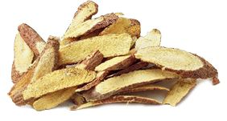
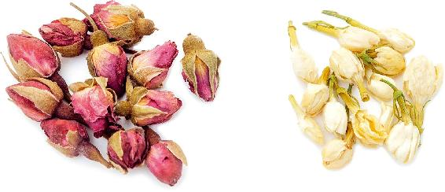
有的人睡觉特别“轻”，有一点动静就容易醒，有时醒了还不容易再睡着。这是血虚的缘故，造成“血不养心”，需要多补心血。
【原料】
桂圆肉60粒、红枣30个。
【功效】
【功效】
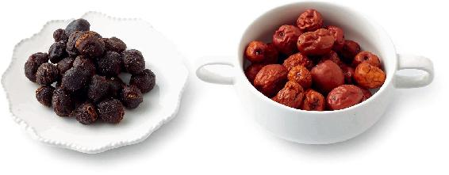
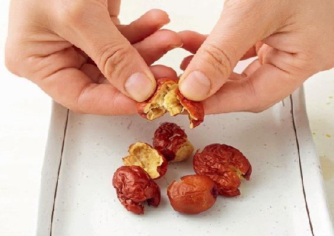
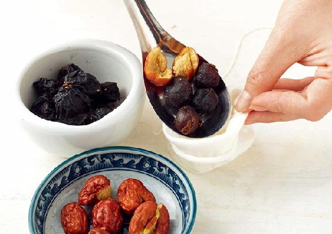
允斌叮嘱
读者评论
——3群读者
——晴
——凌姐
——姐1335675
——ida
——兠里侑鎕
——Mahdⅰs小公主
——海妹子
——幸福
——Mary
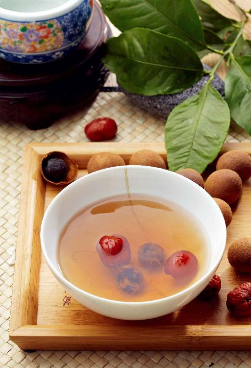
失眠时感觉心里烦热，辗转反侧，这是心火扰乱了睡眠。这种失眠如果是偶然现象，可能是压力或热毒引起的心火，可以喝莲子心甘草茶（见本书顺时强身篇203页）来调理。如果这种失眠长期出现，并且睡觉出汗（盗汗、手脚心发热），那是阴虚引起的心火，可以加入生地一起饮用，效果更好。
地黄是一种中药，生的叫生地，炙过的叫熟地。
生地滋阴的效果好，但有点凉性，适合阴虚有内热时用。
【原料】
生地黄90克、莲子心20克、甘草20克。
【做法】
【功效】
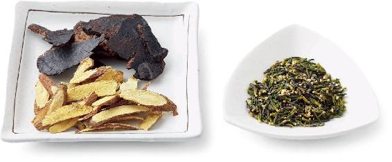
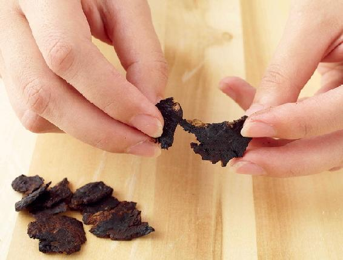
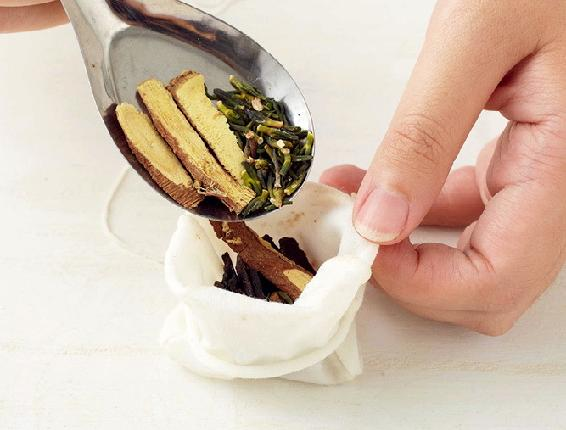
读者评论
——张桂兰
——李香
——苏丽
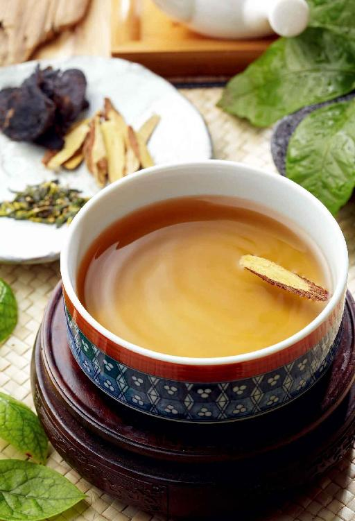
失眠有不同类型，表现各不相同，对症调理效果才好。
如果经常半夜醒来睡不着，并且梦特别多，那是肝火扰乱了睡眠，喝玫瑰茶可以调理。
如果肝火比较重，则可以加入月季花和茉莉花一起饮用。
【原料】
玫瑰花6朵，肝火重者加月季花6朵、茉莉花12朵。
【做法】
沸水冲泡后随时饮用。
【功效】
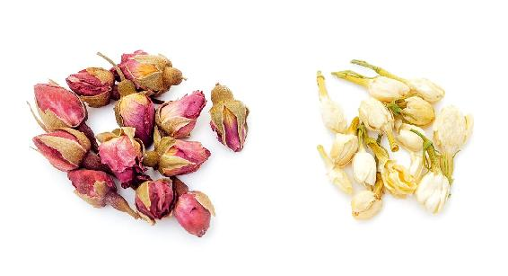
允斌叮嘱
——周晓玲
——45群易小
——温暖
——芳
——英子
——读者朋友
——Mama Lai
——23群读者
——期待
——周新芳
——周银蕊
允斌点评
这位读者辨证准确。肝火扰乱心神会使人半夜醒来。头部两侧是胆经循行部位，疏通这里对肝火引起的失眠有帮助。当半夜醒来睡不着时，马上用梳子疏通头部两侧进行放松，也有助眠的作用。
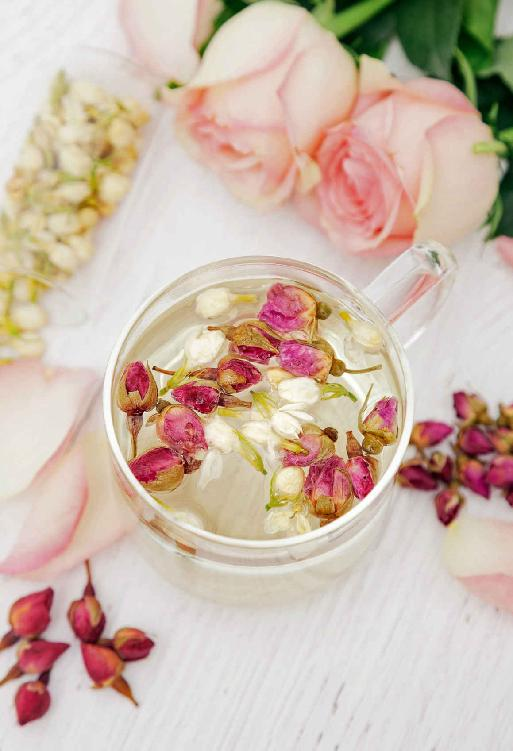
由于工作或学习不得不熬夜时，容易感觉疲劳、犯困、注意力无法集中。而专心动脑筋后，该睡觉时大脑又处于亢奋状态使人睡不着。
其实熬夜加班，不要喝茶或咖啡提神，只要喝一杯蜂蜜鲜松汁，就可以让您精力充沛；而到休息睡觉时，又能睡得更香。这是因为松针汁有双向调节的作用。
【原料】
新鲜松针一大把、蜂蜜适量。
【做法】
【功效】
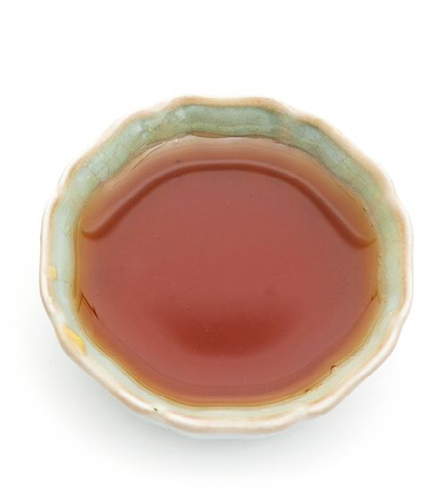
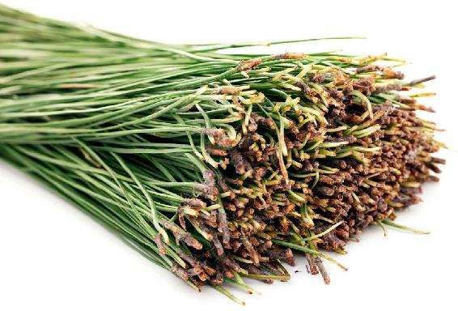
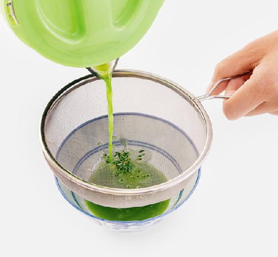
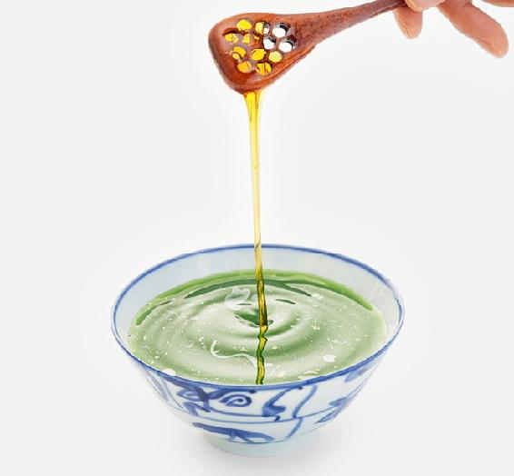
允斌叮嘱
松针按照上面教的处理方法，洗干净松油再用，否则有的人会感觉头晕不适。
读者评论
老师讲的蜂蜜鲜松汁这个方子特别好，我给孩子用了，孩子说上课真的不困了！
——欣然学习
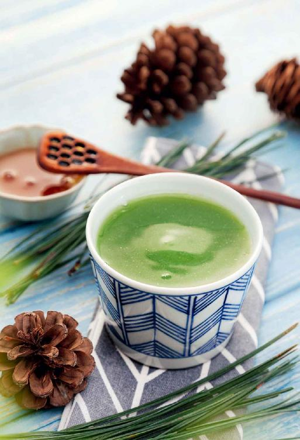